Las Mejores Freidoras de Aire de Doble Cesta en 2026
Cocina dos platos diferentes con tiempos y temperaturas independientes, y sírvelos exactamente al mismo segundo gracias a la sincronización inteligente (SYNC / MATCH). Analizamos a fondo los modelos líderes del mercado.
Las freidoras de aire de doble cesta permiten cocinar dos platos independientes con tiempos distintos y sincronizar su acabado exacto con la función SYNC. La Ninja Foodi AF300EU (7.6L) es la líder en calidad/precio general, la Ninja MAX AF400EU (9.5L) es la mejor para familias grandes (+4 comensales), y la Cecotec Cecofry Dual 9000 ofrece la máxima modularidad económica.
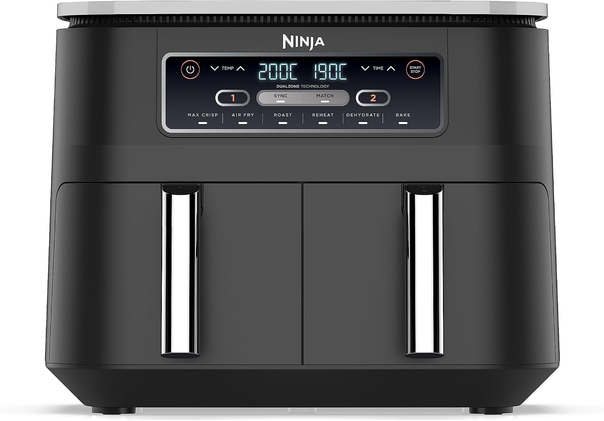
Ninja Foodi DualZone 7.6L [AF300EU]
El estándar indiscutible: 2 cestas independientes de 3.8L, acabado sincronizado SYNC perfecto, revestimiento cerámico sin tóxicos y función Max Crisp a 240°C.
Ver Oferta en Amazon →Tabla Comparativa de las 6 Mejores Freidoras Dobles
Compara capacidad, potencia, rango térmico y tecnologías clave de sincronización para elegir en 30 segundos.
| Modelo y Foto | Capacidad Total | Potencia | Tecnología Sincro | Puntuación | Acción |
|---|---|---|---|---|---|
|
Mejor en General
Ninja Foodi DualZone 7.6L AF300EU |
7.6 Litros (2 cestas de 3.8L) | 2400 W | Tecnología DualZone con función SYNC para sin... | ★ 4.6 (28.450) | Ver Precio |
|
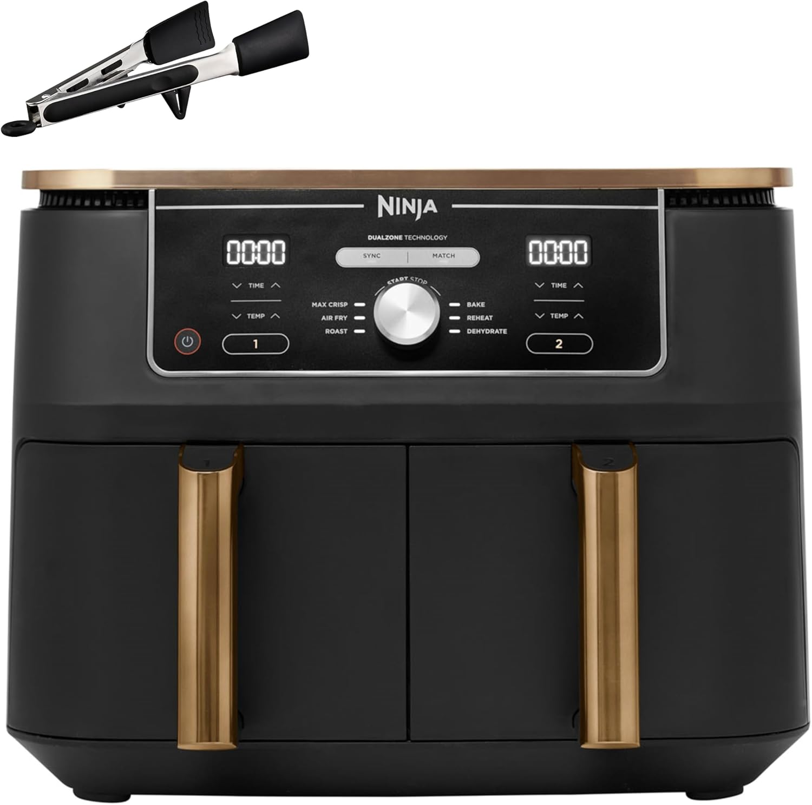
Gran Capacidad Familiar
Ninja Foodi MAX DualZone 9.5L AF400EU |
9.5 Litros (2 cestas de 4.75L) | 2470 W | Capacidad masiva de 9.5L (4.75L por cesta), c... | ★ 4.7 (34.200) | Ver Precio |
|
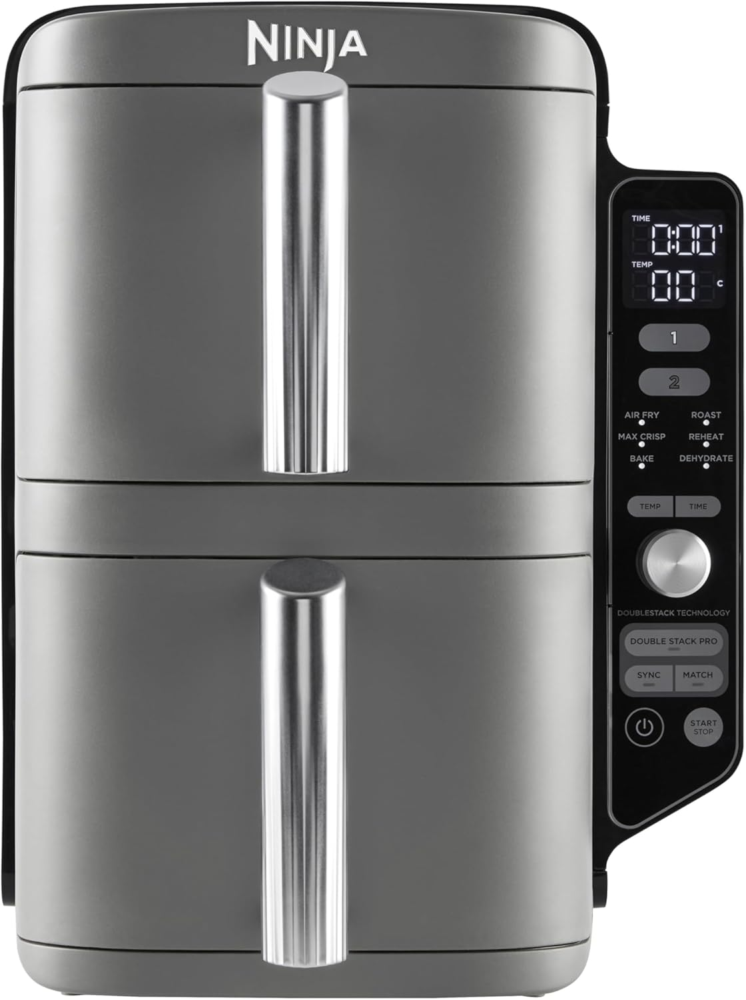
Diseño Vertical Apilado
Ninja Double Stack XL 9.5L SL400EU |
9.5 Litros (2 cajones verticales de 4.75L) | 2470 W | Diseño vertical apilado pionero que reduce en... | ★ 4.6 (1.850) | Ver Precio |
|
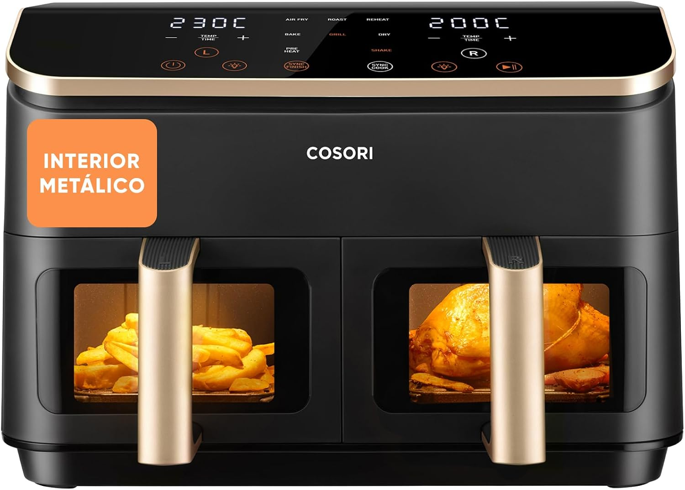
Ventanas Visor Iluminadas
COSORI Dual Basket 8.5L CAF-R901 |
8.5 Litros (2 cestas de 4.25L) | 2800 W | Ventanas transparentes ClearCook con iluminac... | ★ 4.6 (4.920) | Ver Precio |
|
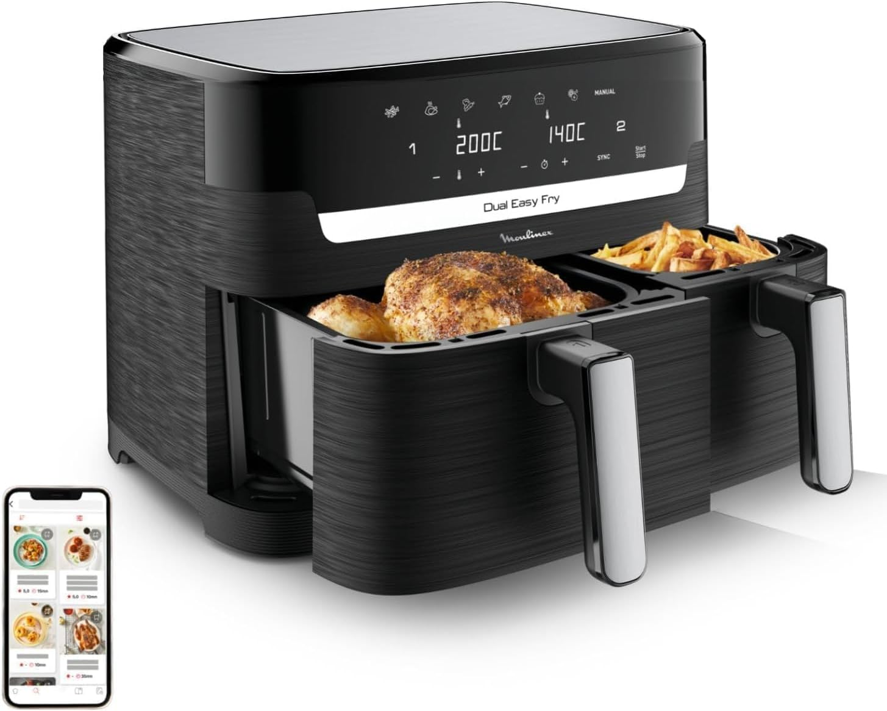
Grill Antiadherente
Moulinex Dual Easy Fry & Grill 8.3L |
8.3 Litros (Cesta XXL 5.2L + Cesta Guarnición 3.1L) | 2700 W | Diseño de cestas asimétricas (5.2L + 3.1L) qu... | ★ 4.5 (2.150) | Ver Precio |
|
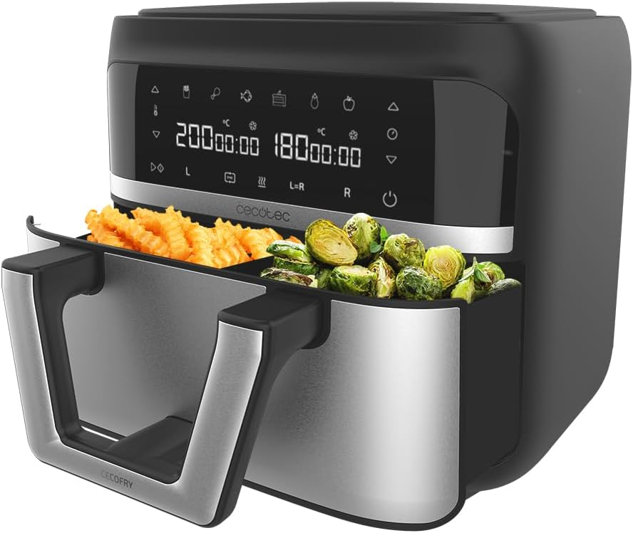
Pared Modular Convertible
Cecotec Cecofry Dual 9000 9L |
9 Litros (Cubeta única de 9L o doble de 4.5L + 4.5L con divisor) | 2850 W | Pared divisoria extraíble: funciona como 2 ce... | ★ 4.3 (3.680) | Ver Precio |
Nuestra Selección de Freidoras de Doble Cubeta
Evaluación rigurosa con radar charts de 5 dimensiones, pros, contras y perfil de usuario recomendado.
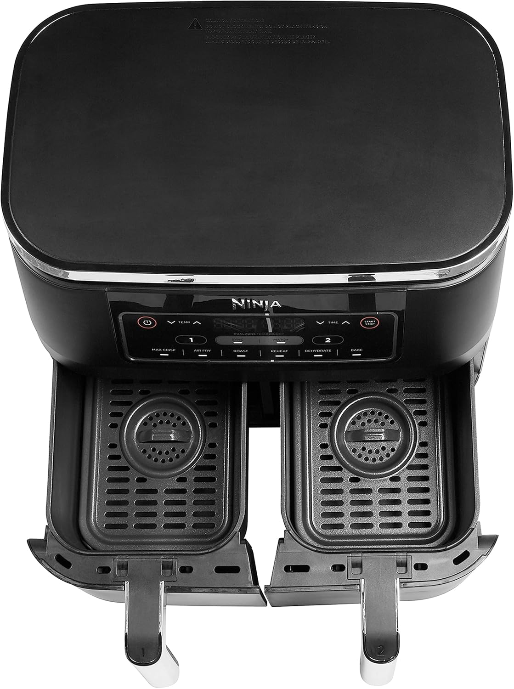
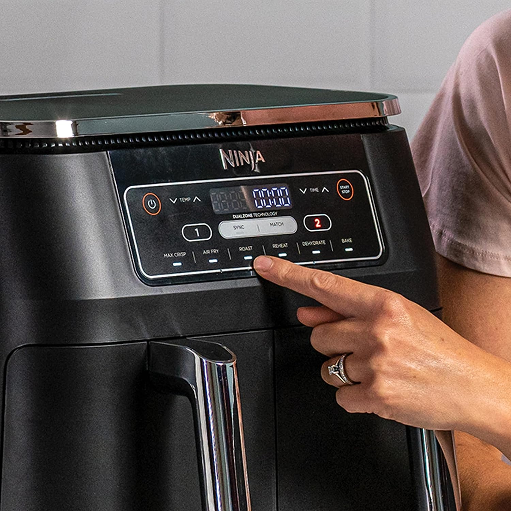
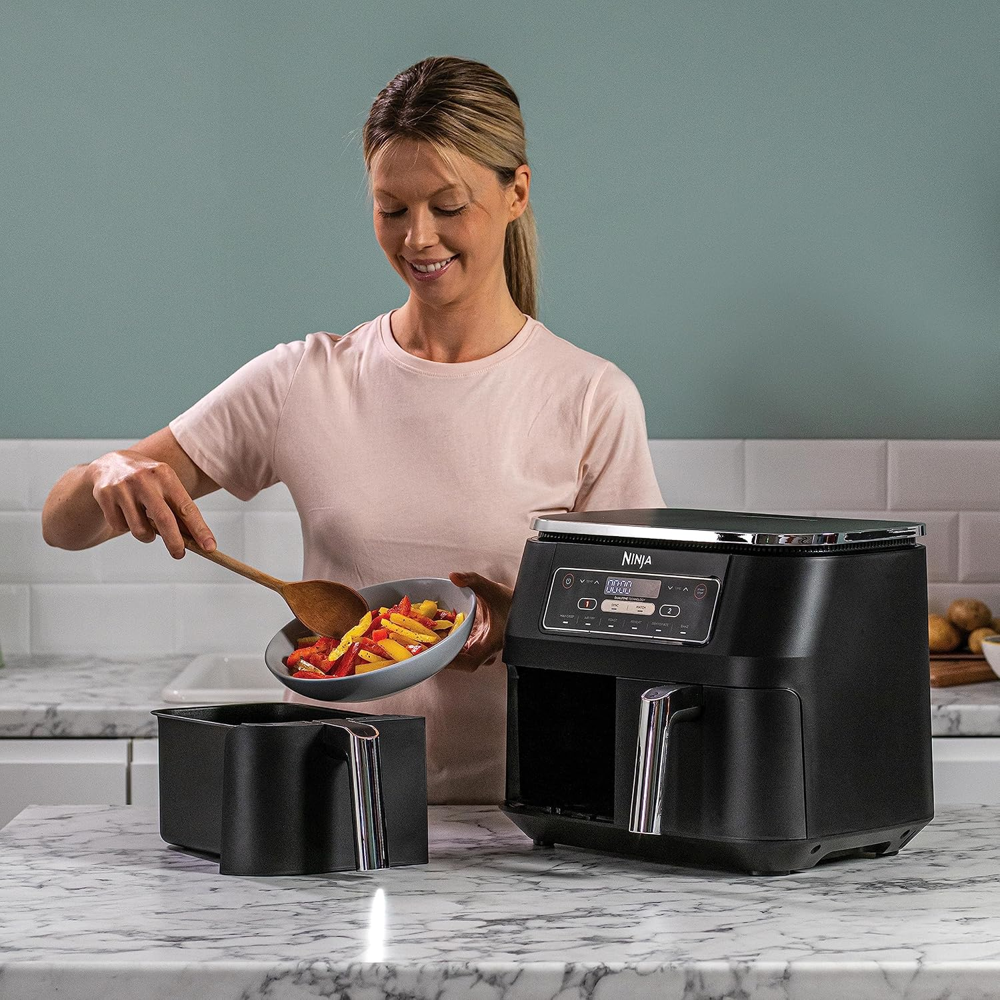
Ninja Foodi DualZone 7.6L [AF300EU]
La Ninja DualZone AF300EU es la freidora de aire que popularizó el formato de dos cestas independientes y sigue siendo la referencia absoluta en fiabilidad, aislamiento térmico y facilidad de cocción simultánea.
Ventajas Principales
- Tecnología SYNC que coordina automáticamente el final de dos platos diferentes.
- Modo MATCH para duplicar tiempos y temperaturas en un solo toque.
- Cestas de cerámica antiadherente libres de PTFE/PFOA y aptas para lavavajillas.
- Rango térmico de 40°C a 240°C con función Max Crisp ultra crujiente.
A Tener en Cuenta
- Anchura frontal de 38 cm (requiere espacio en encimera).
- No tiene ventanas de visualización transparentes.
COSORI Dual Basket 8.5L [CAF-R901]
- 8.5L (2 cestas de 4.25L) con visores iluminados
- Potencia turbo de 2800W
- Funciones SyncCook y SyncFinish
Cecotec Cecofry Dual 9000 9L Convertible
- Pared divisoria extraíble: 1 cubeta 9L o 2x 4.5L
- 2850W con tecnología PerfectCook
- Precio imbatible por debajo de 80€
Moulinex Dual Easy Fry & Grill 8.3L
- Cesta XXL 5.2L + Cesta Guarnición 3.1L
- Parrilla de aluminio fundido Die-Cast Grill
- 2700W y tecnología Extra Crisp
Accesorios Imprescindibles para tu Freidora Doble
Protege el revestimiento antiadherente de las cestas y duplica las alturas de cocción.
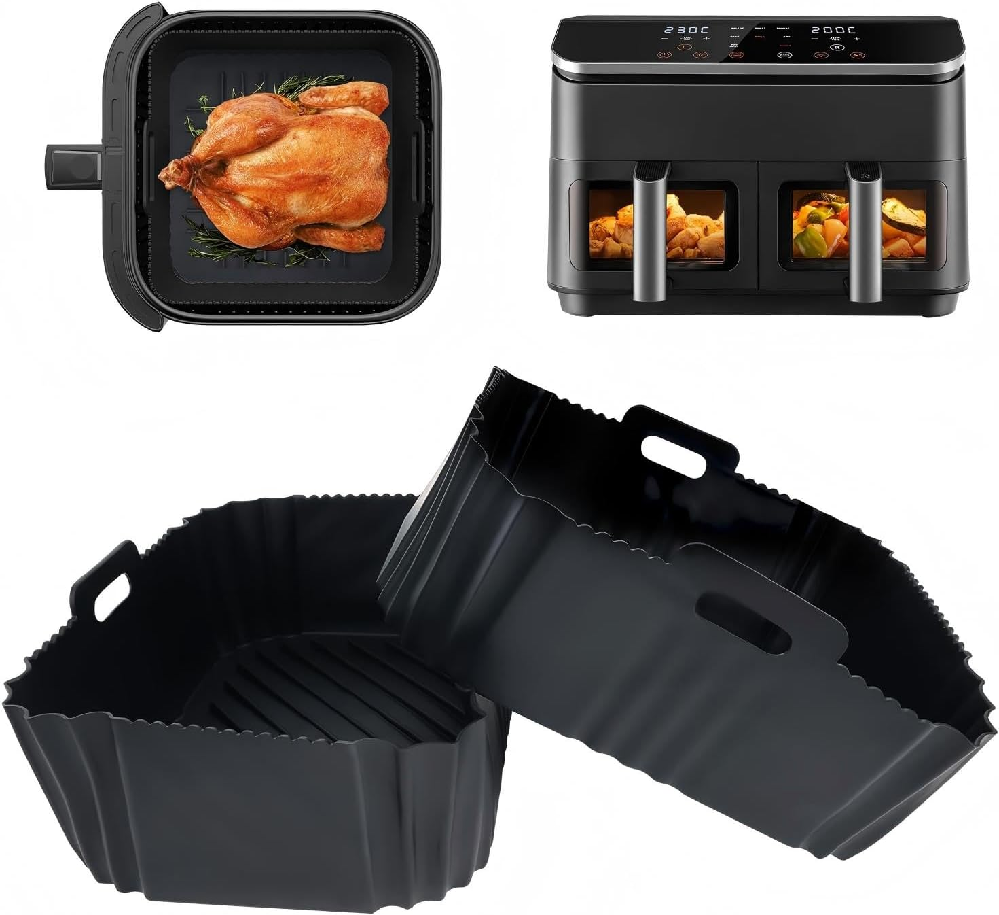
Moldes Silicona Bykitchen (Pack 2)
- Evita ensuciar las cestas metálicas, prolongando la vida útil del recubrimiento antiadherente.
- Silicona platino de grado alimentario 100% libre de BPA y resistente hasta 240°C.
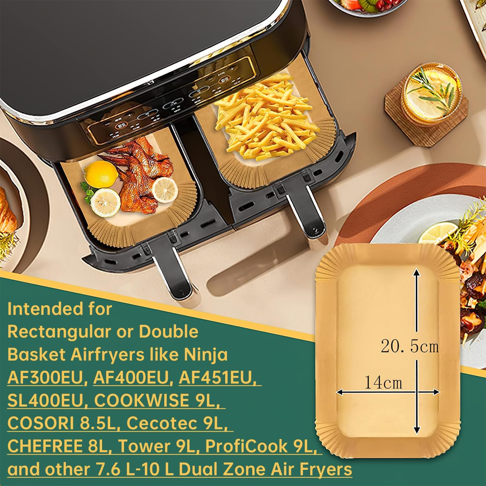
Papel Horno Perforado Kispog (100 Uds)
- 100 hojas precortadas con la medida exacta de las cestas duales rectangulares.
- Perforaciones estratégicas que permiten el paso óptimo del flujo de aire 360°.
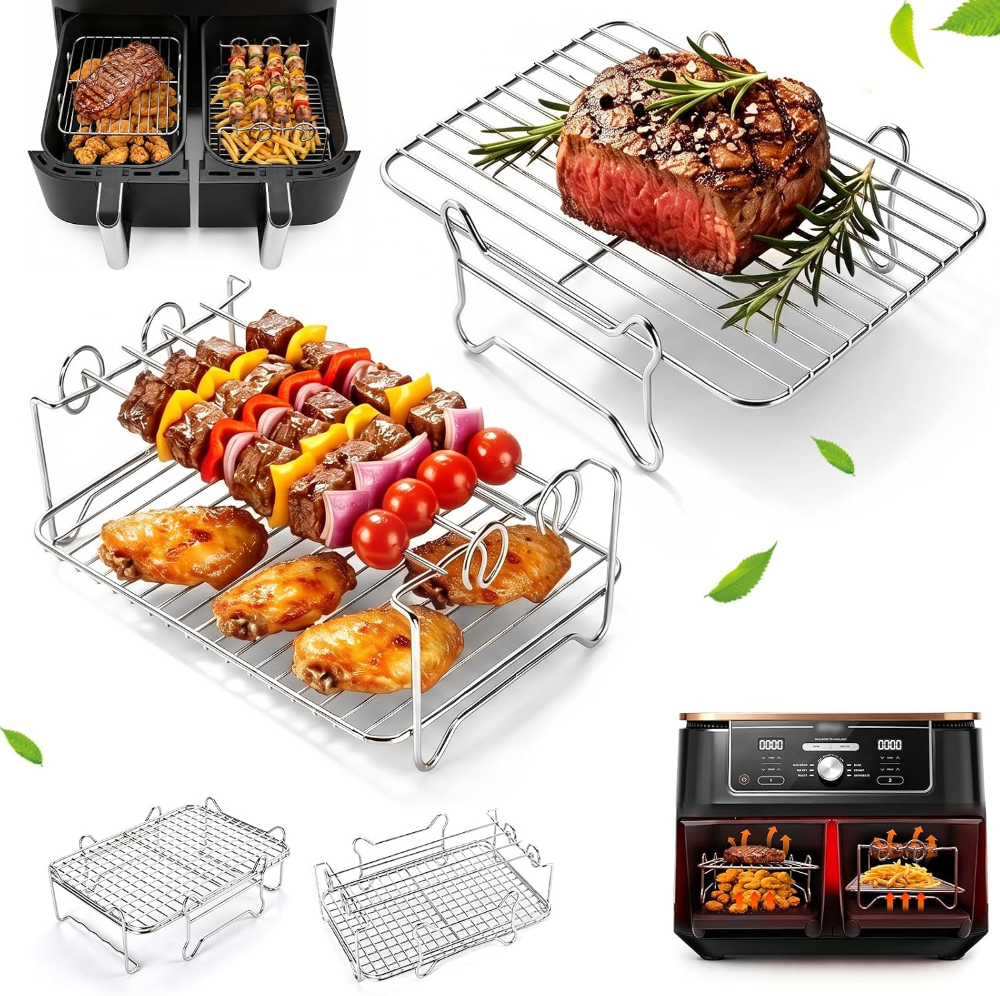
Rejillas Doble Altura Goldlion Inox
- Duplica la superficie útil de cocción en cada cesta permitiendo cocinar en dos alturas.
- Acero inoxidable 304 de grado alimenticio resistente a la corrosión y apto para lavavajillas.
¿Cómo Elegir tu Freidora de Aire de Doble Cesta? (Guía Rápida)
Una freidora sin aceite de doble cubeta resuelve el principal cuello de botella de los modelos convencionales: la incapacidad de preparar un plato principal (ej. salmón o pechugas de pollo) y su guarnición (patatas o verduras) al mismo tiempo sin que uno se enfríe o se mezclen sus sabores.
Asegúrate de que el modelo incluya sincronización automática de finalización (llamada SYNC en Ninja, SyncFinish en Cosori). Esta función retrasa de forma matemática el inicio del alimento con menor tiempo de cocción para que ambos compartimentos avisen con el pitido final al mismo segundo exacto.
Preguntas Frecuentes sobre Freidoras de Doble Cesta
Respuestas directas basadas en pruebas de uso real y análisis técnico.
Una freidora de aire de doble cesta incorpora dos cubetas de cocción independientes con controles térmicos separados. Su ventaja fundamental es preparar dos platos simultáneamente con tiempos distintos y sincronizar su acabado exacto con la función SYNC, evitando esperas entre plato principal y guarnición sin mezcla de olores.
La Ninja Foodi MAX DualZone AF400EU de 9.5 litros es la opción líder para familias de más de 4 comensales. Con dos cestas de 4.75L cada una, 2470W de potencia y función Max Crisp a 240°C, cocina al mismo tiempo hasta 2 kg de pollo y 1.5 kg de patatas.
Ver modelo recomendado: Ninja Foodi MAX DualZone 9.5L AF400EU →
La función SYNC calcula automáticamente el desfase temporal entre elaboraciones para que ambas cestas terminen al mismo minuto exacto, retrasando el arranque del alimento más rápido. La función MATCH replica la temperatura y tiempo de la primera cesta en la segunda con un solo toque.
La Ninja Double Stack XL SL400EU es la solución óptima para cocinas estrechas. Su diseño vertical apilado reduce un 30% la anchura frontal (solo 28 cm de ancho) manteniendo 9.5 litros de volumen y ofreciendo 4 niveles de cocción simultáneos con sus rejillas apilables.
Ver modelo recomendado: Ninja Double Stack XL 9.5L SL400EU →
Los accesorios indispensables son los moldes de silicona rectangulares antiadherentes reutilizables para proteger el teflón y facilitar la limpieza, el papel vegetal perforado desechable apto para altas temperaturas y las rejillas dobles de acero inoxidable para cocinar en dos niveles dentro del mismo cajón.
Ver modelo recomendado: Moldes Silicona Bykitchen (Pack 2) →